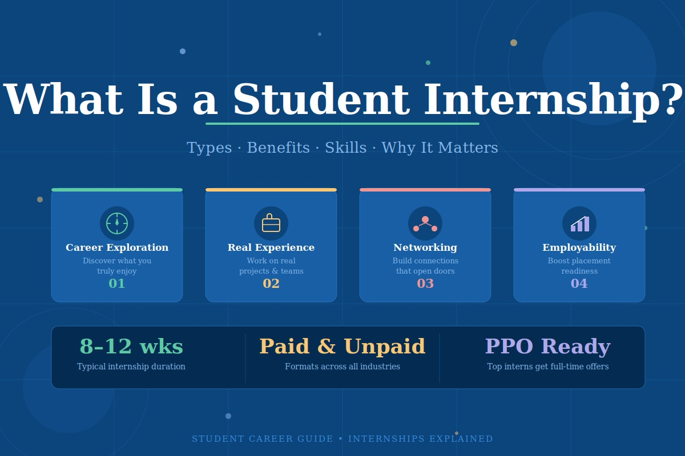

Career Portal
ABOUT
A career portal is a digital platform designed to streamline recruitment by connecting job seekers with employers. It serves as a centralized hub where candidates can browse open positions, apply for jobs, and manage their profiles, while companies use it to track applications, automate communication, and build talent pools.
- General Job Boards: Platforms like Naukri and Indeed allow you to upload resumes, filter jobs by location, and apply directly to thousands of roles across India.
- Government & Public Sector: The National Career Service (ncs.gov.in) is an official Indian Ministry of Labour platform that offers skill development, career counseling, and access to job fairs for public and private sector roles. For state-specific employment and training, you can utilize the Tamil Nadu Private Jobs Portal.


Internships

Finding the right internship in Chennai involves exploring local listings, government portals, and targeted career platforms. You can kickstart your search using the Prime Minister Internship Scheme (pminternship.mca.gov.in) to apply for paid opportunities across 25+ sectors, or browse thousands of listings on Internshala Chennai.